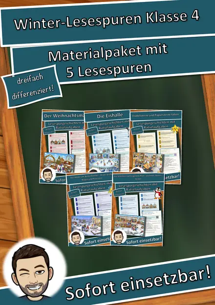
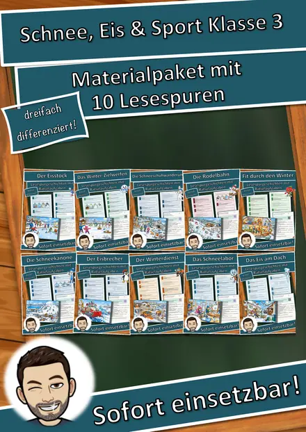
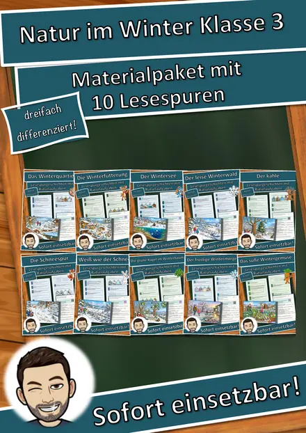
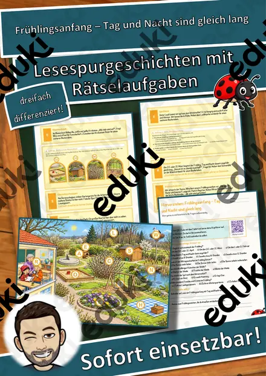
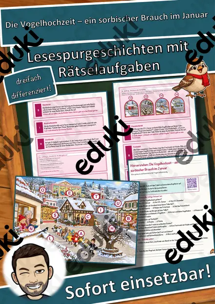
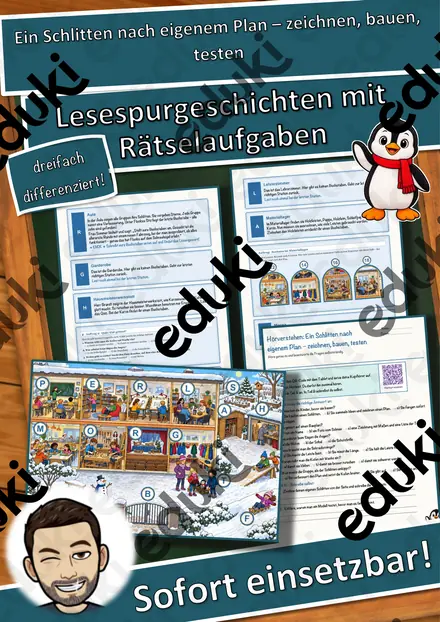
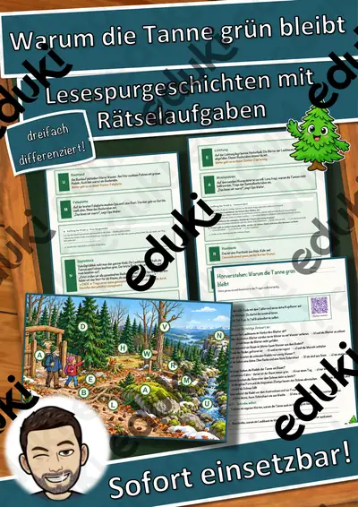
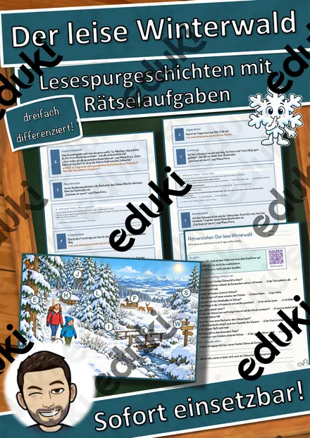

Der Wertstoffhof – Lesespurgeschichte mit Rätselaufgaben (Klasse 3)
Mit dieser differenzierten Lesespurgeschichte erarbeiten die Kinder selbstständig und motivierend, warum wir Müll sortieren und was aus Papier, Verpackungen, Glas, Bioabfall, Batterien und alter Kleidung wieder entsteht. Müllexpertin Frau Sauber führt Mia und Tom Schritt für Schritt über einen Wertstoffhof – von der Papiertonne über Gelbe Tonne, Glascontainer, Biotonne, Restmülltonne, Batteriebox und Altkleidercontainer bis in die Recyclinghalle.
So funktioniert die Lesespur: Die Kinder lesen einen Abschnitt, entnehmen dem Hinweis einen Ort auf dem Hof, suchen ihn auf dem farbigen Hof-Plan und lesen dort weiter. An jeder richtigen Station sammeln sie einen Buchstaben. Vier Sackgassen (Bagger, Möwe, Zaun, Kran) dienen der Selbstkontrolle. Am Ende ergeben die gesammelten Buchstaben – nach dem Umstellen – ein geheimes Lösungswort rund um das Thema.
Inhaltlich vermittelt das Material in sehr einfacher, altersgerechter Sprache, was in welche Tonne gehört und warum, wie aus altem Papier neues Papier, aus Flaschen neue Flaschen und aus Bioabfall Kompost wird, warum Batterien getrennt gesammelt werden und dass Müll vermeiden noch besser ist als Müll sortieren. Ein lehrplanrelevantes Thema für den Sachunterricht der Grundschule (Klasse 3 und 4) – passend zu Umwelt und Nachhaltigkeit, Kreisläufen und verantwortlichem Handeln im Alltag.
Das ist enthalten:
- Lesespurgeschichte in drei Niveaus (leicht, mittel, schwer) – ideal zur Differenzierung
- farbiger Hof-Plan mit allen Stationen
- vier eingebettete Aufträge: Begriffe verbinden, Quiz, Rechenaufgabe, Steckbrief
- Hörverstehen mit QR-Code zum Hörtext (Teil A Ankreuzen, Teil B frei schreiben)
- Rätselseite (Wörter-Suchsel und Wissensquiz)
- Ausmalbild
- ausführliches Lösungsblatt mit Fundorten
- das komplette Material zusätzlich als drucksparende Schwarz-Weiß-Vorlage
Geförderte Kompetenzen: sinnentnehmendes Lesen, Anwenden erster Lesestrategien, konzentriertes Zuhören sowie das Verständnis von Mülltrennung und Wiederverwertung.
Einsatz: Übungsphasen, Wochenplan, Stationenlernen, Vertretungsstunden, Freiarbeit, Projekttage zum Umweltschutz und Nachhilfe. Umfang: ca. 24 Seiten.
Ähnliche Materialien

Materialpaket Winter und Advent für die 4. Klasse: 5 Lesespurgeschichten mit Rätselaufgaben (Weihnachtsmarkt, Fröbelsterne, Sternbilder & mehr)

Materialpaket Schnee, Eis und Wintersport für die 3. Klasse: 10 Lesespurgeschichten mit Rätselaufgaben (Rodelbahn, Eisstock, Schneelabor & mehr)

Materialpaket Natur im Winter für die 3. Klasse: 10 Lesespurgeschichten mit Rätselaufgaben (Wintertiere, Winterwald, Schneespuren & mehr)

Frühlingsanfang – Tag und Nacht sind gleich lang – Lesespurgeschichte mit Rätselaufgaben (Klasse 3)

Die Vogelhochzeit – ein sorbischer Brauch im Januar – Lesespurgeschichte mit Rätselaufgaben (Klasse 3)

Ein Schlitten nach eigenem Plan – zeichnen, bauen, testen – Lesespurgeschichte mit Rätselaufgaben (Klasse 3)

Warum die Tanne grün bleibt – Lesespurgeschichte mit Rätselaufgaben (Klasse 3)
